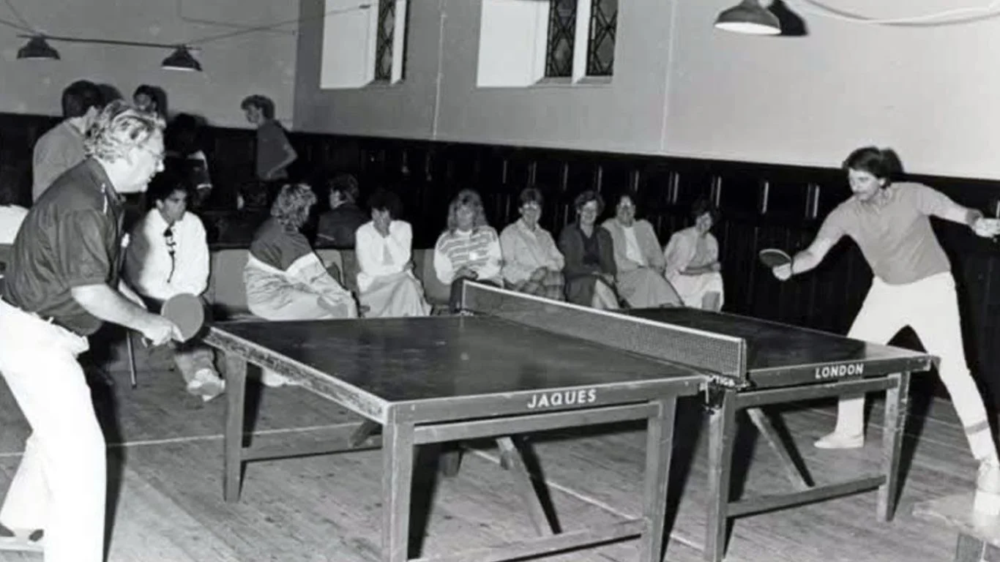
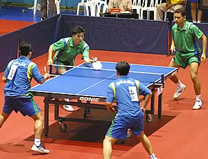
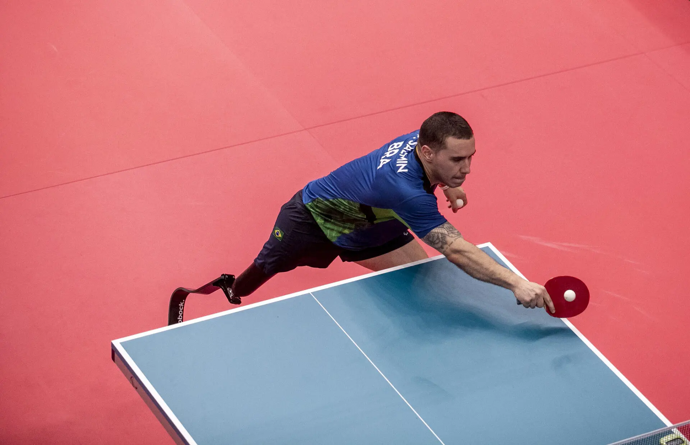

Tênis de mesa no Brasil: do salão vitoriano ao topo do mundo
Como um passatempo inglês virou um esporte de altíssima exigência técnica no país
Cauã Alcale—
São Paulo
A Origem do Tênis de Mesa
O tênis de mesa, carinhosamente conhecido por muitos como ping-pong, tem uma história curiosa e elegante. Ele nasceu na Inglaterra do final do século XIX, criado originalmente como uma versão adaptada do tênis de quadra para ser jogada em ambientes fechados (em cima de mesas de jantar) durante os dias frios ou chuvosos da era vitoriana. O que começou como um passatempo da alta sociedade britânica ganhou as regras oficiais no início do século XX, espalhou-se rapidamente pela Ásia e pela Europa e, com o tempo, desembarcou no Brasil, ganhando força em clubes, escolas e associações de colônias imigrantes até se consolidar como um esporte dinâmico de altíssimo nível em terras brasileiras.

Origem do tênis de mesa na Inglaterra.
Como o Tênis de Mesa funciona?
À primeira vista, a velocidade da bolinha impressiona, mas a dinâmica do esporte é bem intuitiva. Uma partida de tênis de mesa é disputada em sets (geralmente vence quem fechar 4 sets de 11 pontos, com diferença mínima de dois pontos). Cada jogador ou dupla saca duas vezes seguidas alternando o direito de saque. A bola precisa tocar primeiro no lado de quem saca, passar por cima da rede e quicar no lado do adversário, que deve devolvê-la de primeira. Os pontos acontecem quando o oponente errar a mesa, deixa a bola cair ou não consegue devolvê-la corretamente.

Partida oficial de tênis de mesa.
O Brasil no cenário
Embora potências asiáticas como a China dominem tradicionalmente o cenário mundial, o Brasil vem escrevendo uma história espetacular e respeitada no circuito internacional, impulsionado pelo trabalho da Confederação Brasileira de Tênis de Mesa (CBTM) e por competições nacionais acirradas.

Hugo Calderano em partida oficial.
Quando o assunto são os grandes nomes que elevam o patamar do país no mundo, é impossível não falar de Hugo Calderano. Considerado o maior mesatenista da história das Américas, Calderano revolucionou o esporte no Brasil ao quebrar barreiras inéditas, vencer etapas do Circuito Mundial (WTT) e alcançar o Top 5 do ranking mundial com um estilo de jogo ultra veloz e inteligente. Ao lado dele, outros grandes talentos como Bruna Takahashi, principal expoente do tênis de mesa feminino brasileiro, também vêm inspirando uma nova geração a segurar a raquete com paixão.
A Importância na Vida dos Atletas
Praticar tênis de mesa vai muito além da diversão descontraída: é um verdadeiro exercício para o corpo e para a mente. O esporte exige reflexos felinos, tomada de decisão em frações de segundo, excelente coordenação motora e concentração absoluta. Além disso, movimenta o corpo todo e proporciona um ótimo gasto calórico. Valorizar o tênis de mesa é reconhecer a dedicação de atletas que treinam duro em um esporte de altíssima exigência técnica e mental, abrindo portas para que mais jovens descubram essa modalidade apaixonante.